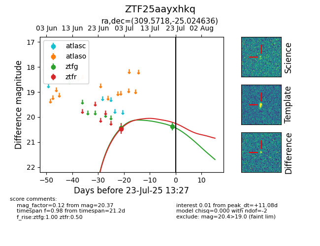

Target ZTF25aayxhkq at 2025-07-23 13:27, see:
FINK: fink-portal.org/ZTF25aayxhkq
Lasair: lasair-ztf.lsst.ac.uk/objects/ZTF25aayxhkq
ALeRCE: alerce.online/object/ZTF25aayxhkq
alt names
ZTF25aayxhkq (ztf,fink)
coordinates:
equatorial (ra, dec) = (309.5718,-25.02464)
galactic (l, b) = (19.6718,-33.73754)
photometry
last ztfg=20.37, ztfr=20.46
2 ztfg, 1 ztfr detections
